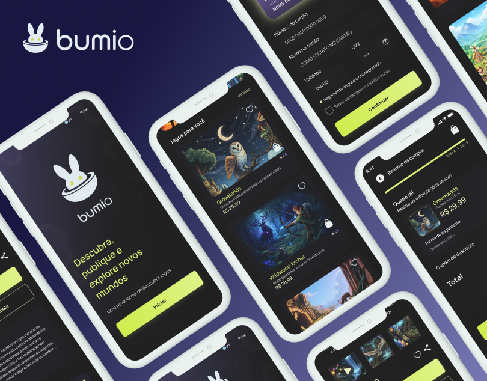
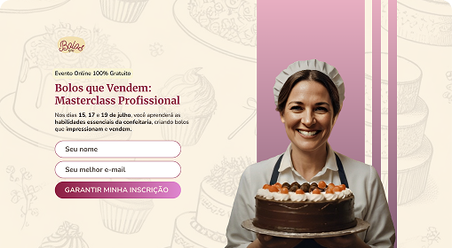
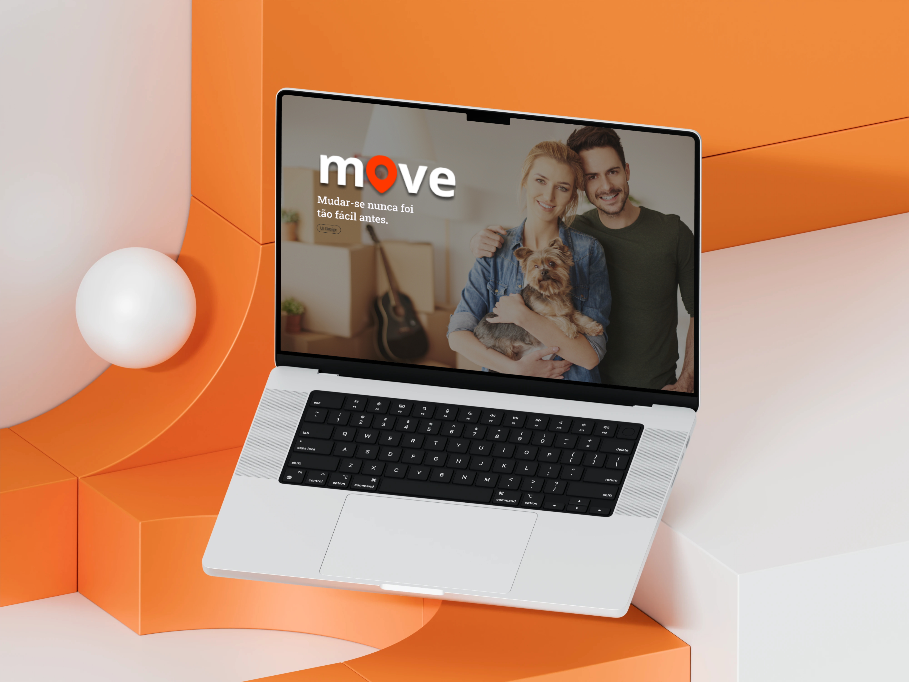
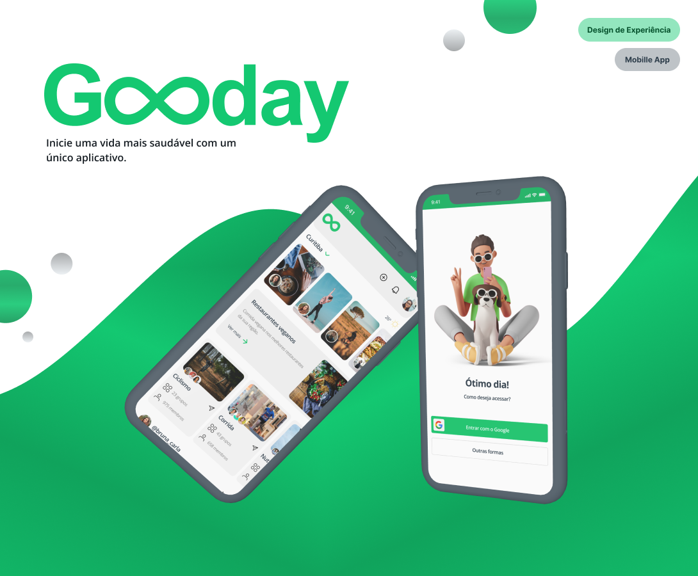

Pesquisa & Estratégia
Pesquiso intenção e comportamento do usuário para entender suas necessidades antes de definir a estrutura visual.
Olá, sou Jaqueline
Construo design que entende o usuário e converte o interesse em ação.
Vamos conversarCada projeto começa com uma pergunta: o que precisa acontecer quando alguém chegar nessa página?
Estudo o público, o objetivo do negócio e o comportamento de quem vai navegar. A partir disso, estruturo layout, hierarquia e chamadas que guiam o usuário até a ação certa.
O resultado é uma experiência bem otimizada que une boa usabilidade à estratégia de conversão.
Pesquiso intenção e comportamento do usuário para entender suas necessidades antes de definir a estrutura visual.
Logotipo, paleta de cores e elementos visuais pensados pra transmitir a essência do seu negócio.
Hierarquia visual, copy estrutural e chamadas construídas pra guiar o usuário até a ação.
Estruturação focada em código limpo e carregamento rápido que ajudam na performance do site.
Confira o processo criativo e a intenção estratégica por trás de cada projeto.

Plataforma mobile para jogos independentes
Interface pensada pra equilibrar dois lados: jogadores explorando novidades e desenvolvedores ganhando visibilidade.

Página de inscrição para workshop
Criei um fluxo com o mínimo de atrito possível: poucos cliques, dúvidas principais respondidas pra gerar leads qualificados.

Página institucional para serviço de mudanças
O foco era simplificar a decisão do visitante: processo intuitivo e formulário direto, pensados pra aumentar a taxa de contato.

App de saúde e bem-estar
Experiência com comunidade, opções de restaurantes por perto e ganhos da motivação pra transformar intenção em rotina.
Olá, sou Product Designer. Estudo Design de Experiência do Usuário desde 2022 e estou sempre buscando me aprimorar a partir de pesquisas e fundamentos de psicologia aplicada ao comportamento do usuário, onde aprendi a traduzir necessidades em interfaces visualmente estratégicas.
Minha formação especializada me permite otimizar plataformas digitais para fortalecer a comunicação e o relacionamento do seu negócio com o público. Aplico todo o ciclo criativo: desde a pesquisa com usuários até a prototipação de alta fidelidade e testes práticos.
A atenção aos detalhes é meu diferencial, cada hierarquia visual e botão são pensados para gerar confiança na sua marca e facilitar o entendimento imediato da informação. Isso garante uma navegação fluida, onde cada decisão visual guia o usuário diretamente ao que importa.
Se você busca uma Product Designer para fortalecer seu time ou tirar um projeto do papel, vamos conversar.